User manual
Stream Recorder is an app for Home Assistant. It records internet radio streams at fixed times and stores them as MP3 files in the media folder. You use it from the Home Assistant sidebar, on a computer, tablet or phone.
1. Overview
This is how a recording works:
- Add a station. You save the address of a stream once under a name, e.g. “sunshine live Lounge”.
- Create a job. You set when and how long to record, optionally with pre-/post-roll and repeat.
- Done. At the start time the recorder connects to the stream and saves it unchanged. At the end the file is in
/media/stream-recorder/recordand the result is listed under Done.
The recorder runs as an app in the background of Home Assistant. The interface does not need to be open, it is only for planning and checking.
2. Installation
The app needs Home Assistant OS or a Supervised installation, i.e. an installation with an App Store (formerly “Add-on Store”).
- In Home Assistant open Settings › Apps › App Store.
- Choose Repositories in the three-dot menu at the top right and add
https://github.com/BreitiDE/ha-stream-recorder. - Stream Recorder appears at the bottom of the list. Open it and click Install.
- Optionally set the storage folder and direct access under Configuration (see below).
- Click Start and turn on Show in sidebar.
App configuration
| Option | Meaning |
|---|---|
| Storage folder | Default /media/stream-recorder. Must be below /media or /share. The app creates the folders record, title and deleted in it |
| Username, password | only for direct access without Home Assistant. Both empty = direct access off |
| Log level | how detailed the app writes its own log: debug, info (default), warning, error |
| Network: port | port for direct access, e.g. 8765. Empty = sidebar only |
Restart the app after changing the configuration.
nas. It then appears as /media/nas. Enter /media/nas/stream-recorder as the app's storage folder.Home Assistant shows updates like for any app. Jobs, stations, settings and recordings are kept. Running recordings are stopped, so better update between two recordings. The Home Assistant backup includes the app's database; recordings in the media folder only if you include the media folder in the backup.
3. Opening and signing in
From the sidebar (recommended)
Click Stream Recorder in the Home Assistant sidebar. There is no separate sign-in here, Home Assistant has already signed you in. Your Home Assistant name is shown at the top right. This also works in the companion app and remotely via Nabu Casa.
Directly in the browser (optional)
To open the interface without Home Assistant, enter a username, password and port, e.g. 8765, in the app configuration. Then open http://<Home-Assistant-IP>:8765/ and sign in.
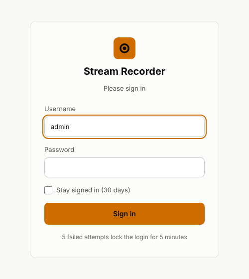
- Stay signed in keeps you signed in for 30 days. Without it the session ends after 12 hours.
- After 5 failed attempts within 5 minutes, signing in from this device is locked for 5 minutes.
- If username or password change in the configuration, all existing sessions become invalid.
- Sign out at the top right only exists for direct access.
4. The interface
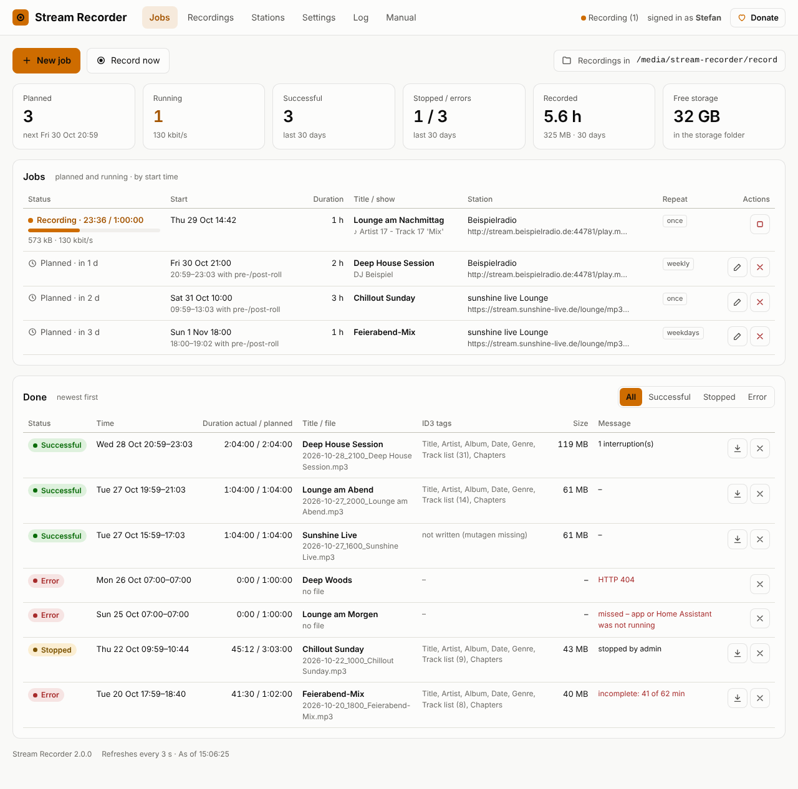
Header and menu
| Element | Function |
|---|---|
| Jobs | main page with statistics, planned and finished recordings |
| Recordings | all files: play, edit tags, rename, cut, delete (section 10) |
| Stations | add, test, change and delete saved streams |
| Settings | language, trash, file names, pre-/post-roll, cutting single tracks, system info |
| Log | the latest entries of the app log |
| Manual | this page. ← back to the app at the top right returns |
| Status dot | green = ready, orange = recording, red = app not reachable |
| Donate | Do you like the app? I'd be happy about a donation via PayPal |
Actions and statistics
- New job: plan a recording (section 6), Record now: start right away (section 7).
- Next to them you see the folder the recordings go to.
| Tile | Meaning |
|---|---|
| Planned | number of waiting jobs and start time of the next one (including pre-roll) |
| Running | running recordings and their combined data rate |
| Successful | successful recordings in the last 30 days |
| Stopped / errors | both numbers for the last 30 days |
| Recorded | hours and data volume of the last 30 days |
| Free storage | free space in the storage folder |
The page refreshes itself every 3 seconds.
5. Setting up stations
A station is a saved stream with a name. The sunshine live Lounge stream is already added on first start.
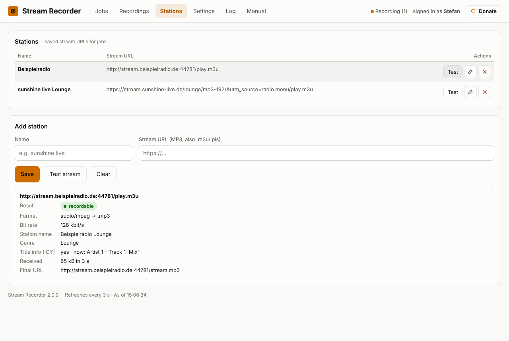
- Open the Stations menu.
- Under Add station enter a name and the stream URL.
- Use Test stream to check whether the stream can be recorded.
- Save.
Use the direct stream address or a playlist address (.m3u, .pls). The recorder resolves playlists and redirects itself. You usually find the address on the station's website under “streams”, “web radio” or “player”, or in radio directories.
| Test result | Meaning |
|---|---|
| Result | recordable or not recordable with the reason |
| Format | audio format and the resulting file extension. MP3 gives .mp3 with ID3 tags, AAC gives .aac |
| Bit rate | quality according to the station, e.g. 192 kbit/s |
| Title info (ICY) | “yes” means the stream sends the songs currently playing. This becomes the track list in the file |
| Final URL | the address after all redirects |
Edit stations with the pencil, delete them with ×. Jobs already planned keep their URL.
6. Planning a recording
Click New job.
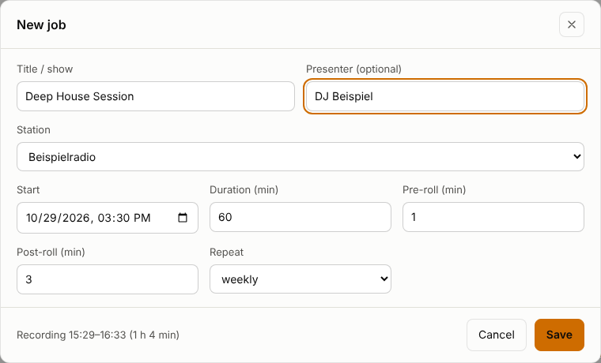
| Field | Meaning |
|---|---|
| Title / show | required. Used in the file name and the ID3 title |
| Presenter | optional. Written to the file as artist |
| Station | one of the saved stations. Other URL … lets you enter an address for this job only |
| Start, duration | start of the show and length in minutes (1 to 1440) |
| Pre-roll, post-roll | how many minutes before the start the recording begins and after the end it stops (0–60 and 0–120) |
| Repeat | once, daily, weekdays (Mon–Fri) or weekly on the same weekday |
- Times are in the Home Assistant time zone, also across daylight saving changes.
- Jobs may overlap. The recorder then records several streams at the same time.
- Repeating jobs jump to the next date after each recording. One-time jobs disappear after recording and are then listed under Done.
7. Recording now
Record now starts a recording without planning, e.g. when something good is on. This also works from an automation (section 14).
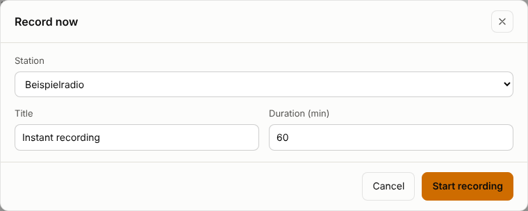
The recording starts within a second and appears at the top of the job list. To stop earlier, just stop it. The file recorded so far is kept.
8. Managing jobs
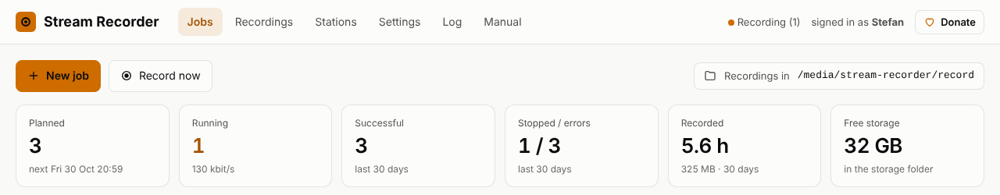
| Display / button | Meaning |
|---|---|
| Planned · in 2 h | waiting for the start time |
| Recording · 23:04 / 1:00:00 | running. Below: progress bar, file size, data rate and, if sent, the current song (♪) |
| “reconnected 2×” | the stream was briefly gone, recording continues in the same file |
| Pencil / × | edit job (only while it is not running) / delete |
| Square | stop the running recording. The file so far is kept, the entry is shown as Stopped |
9. Finished recordings
The Done list shows every finished recording, newest first. Use the buttons at the top right to filter by status.
| Status | When |
|---|---|
| Successful | at least 97 % of the planned time is in the file |
| Stopped | stopped by hand or by an automation, or the app was stopped during recording (restart, update) |
| Error | no data (e.g. “HTTP 404”), too short (“incomplete: 41 of 64 min”) or “missed” because the app or Home Assistant was not running at the start time |
- The arrow downloads the file directly.
- × only removes the entry from the list. The file stays. Entries older than 90 days disappear automatically.
10. Managing and cutting recordings
Recordings shows all audio files from record (recordings) and title (single tracks), including subfolders and files you copied there yourself.
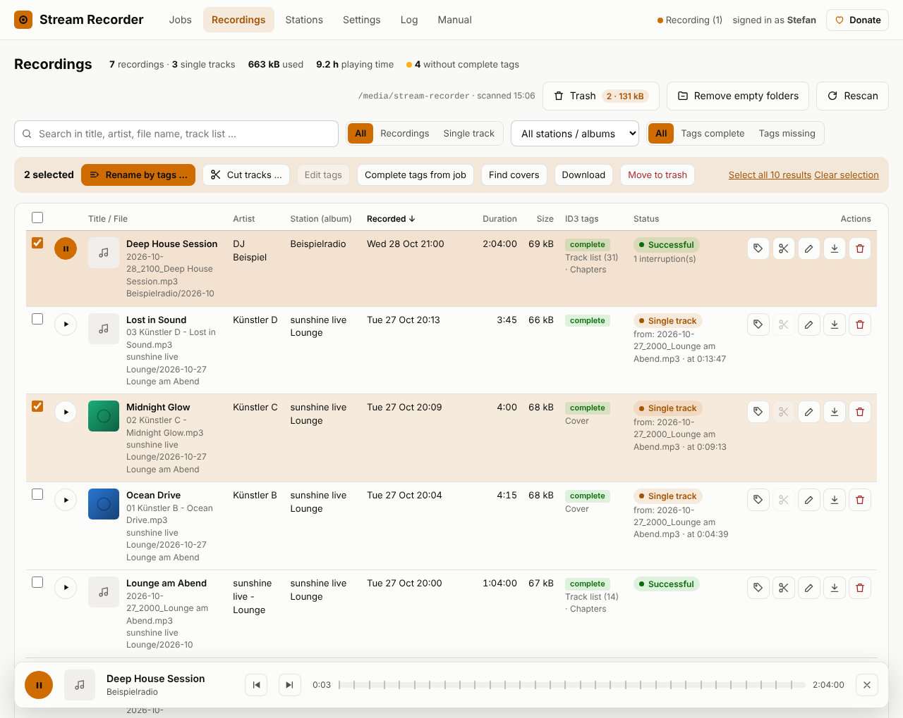
List, search and pages
- Search finds words in title, artist, album, file name, folder and in the track list, e.g. the show in which a certain song was played.
- All / Recordings / Single track, station / album and Tags complete / Tags missing narrow down the list.
- Click a column header to sort, click again to reverse. At the bottom choose 10, 25, 50, 100 or all per page.
- Rescan reads the folders again right away, otherwise this happens when the page is opened.
- Status: result from “Done”, single track with its source, or external for files not made by the recorder.
Playback
The round button in each row plays the file in the browser. In the player bar small marks show the chapters, ⏮ and ⏭ jump to the previous or next song (without chapters 30 seconds). Playback continues when you switch menus.
Several files at once
Tick the files, the checkbox in the table header selects the whole page, Select all … results everything matching the filter. The selection bar offers Rename by tags …, Cut tracks …, Edit tags (one file), Complete tags from job, Find covers, Download and Move to trash.
Rename by tags
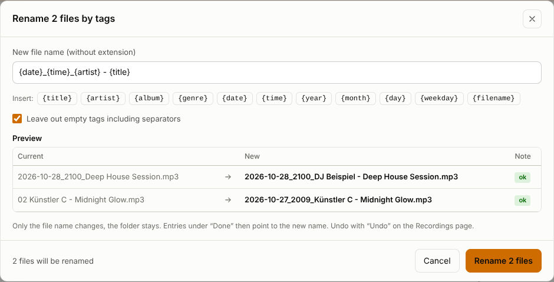
- Placeholders:
{title}{artist}{album}{genre}{date}{time}{year}{month}{day}{weekday}{filename}. The German names ({titel},{interpret}…) work too. - Only the file name changes, the file stays in its folder. Nothing is ever overwritten, an equal name gets “(2)”.
- Undo reverts the last renaming, even after a restart.
Edit tags
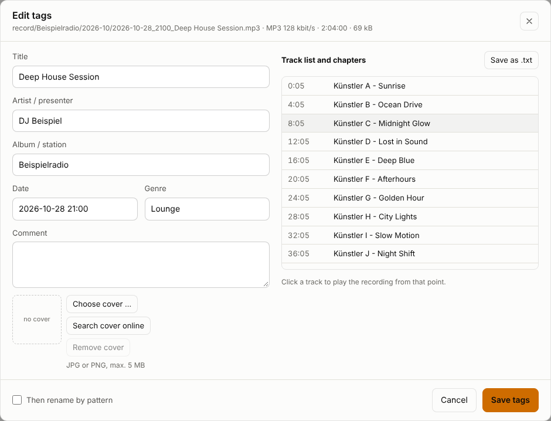
- Title, artist, album, date (
YYYY-MM-DD HH:MM), genre, comment and cover (JPG/PNG up to 5 MB) can be changed. Editing works for MP3 only. - Use values from job fills empty fields from the entry under “Done”.
- The track list can be downloaded as .txt.
Cut into single tracks
A recording with a track list can be split into single songs. Each song becomes its own MP3 file in title with its own tags. The recording itself stays unchanged.
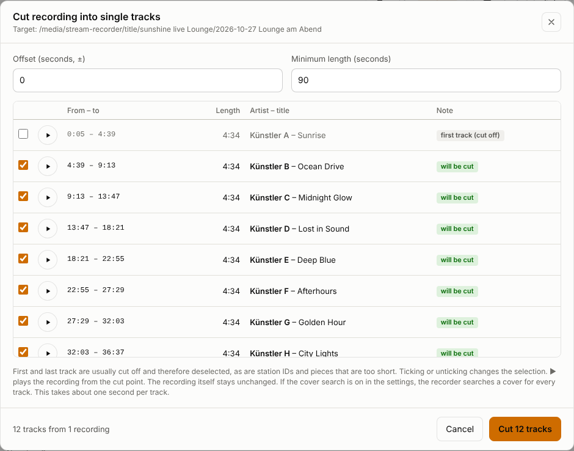
- Click the scissors in the recording's row, or select several recordings and click Cut tracks ….
- Check the list. ▶ plays the recording from the cut point, the checkboxes select or deselect tracks.
- Click Cut … tracks.
- Deselected automatically are the first and last track (usually cut off), station IDs and pieces shorter than the minimum length.
- Lossless, without re-encoding and without fade in/out.
- Tags: artist and title from the track list, album = station, track number, date and time, genre, cover.
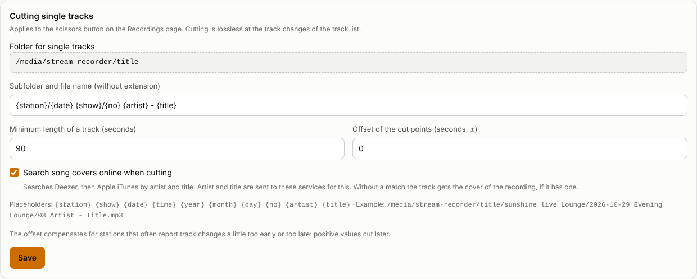
Covers
Radio streams contain no cover images, only artist and title. The recorder therefore searches online, first at Deezer, then at Apple iTunes.
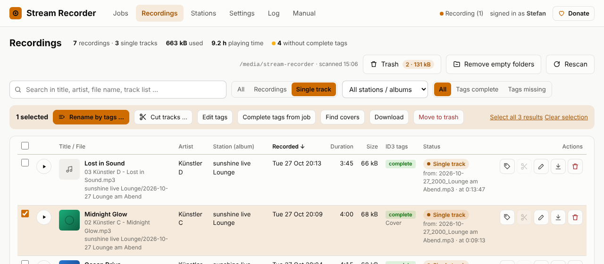
- Automatically when cutting, as long as “Search song covers online when cutting” is on. Later with Find covers or in the tag dialog.
- Better none than a wrong one: a match is only used if artist and title agree well. Without a match the track gets the recording's cover, if it has one.
11. Trash and empty folders
Move to trash (in the row or the selection bar) moves files to /media/stream-recorder/deleted. The subfolders are kept, e.g. deleted/record/sunshine live Lounge/2026-10/…, so the recorder knows where the file belongs.
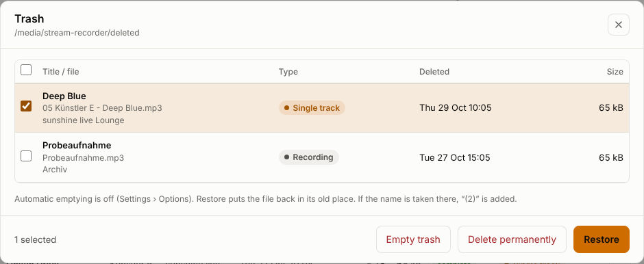
- The Trash button at the top of the Recordings page shows count and size and opens the list.
- Restore puts the files back in their old place. If the name is taken there by now, “(2)” is added.
- Delete permanently and Empty trash really delete. This cannot be undone.
- Empty automatically: under Settings › Options set “Empty trash automatically after (days)”, e.g. 30. Files that have been in the trash longer are then deleted permanently. 0 = never (default).
- Files you put into the
deletedfolder yourself also appear in the trash.
Empty folders
- Automatically: if “Remove folders that became empty after deleting” is on under Settings › Options (default), the recorder removes the folders that became empty after “Move to trash”, also several levels up.
- By hand: Remove empty folders at the top of the Recordings page finds all empty folders, shows them and removes them after confirmation.
.DS_Store, ._… or Thumbs.db don't count. The main folders record, title and deleted and hidden folders are never removed.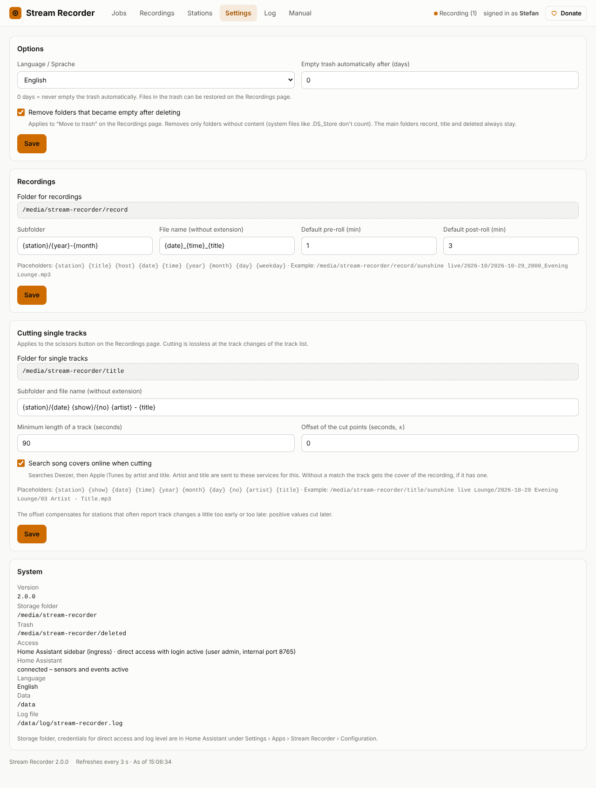
12. Folders and file names
| Folder | Content |
|---|---|
/media/stream-recorder/record | recordings |
/media/stream-recorder/title | single tracks cut from recordings |
/media/stream-recorder/deleted | trash |
You change the storage folder in the app configuration (section 2). Because the files are below /media, you also find them in the Home Assistant media browser and can play them there.
Under Settings › Recordings you set subfolders and file names with placeholders:
| Placeholder | becomes |
|---|---|
{station} | name of the station, e.g. “sunshine live Lounge” |
{title} {host} | title and presenter of the job |
{date} {time} | 2026-10-24, 2100 (start time of the show) |
{year} {month} {day} {weekday} | 2026, 10, 24, Saturday |
The German names ({sender}, {titel} …) work too. Default is {station}/{year}-{month} and {date}_{time}_{title}, for example:
/media/stream-recorder/record/sunshine live Lounge/2026-10/2026-10-24_2100_Deep House Session.mp3Characters that are not allowed (/ : ? * " < > |) become a hyphen. If the file already exists, “(2)” is added. While recording the file is called ….mp3.part.
14. Home Assistant: sensors, events, commands
Sensors
The app creates these entities in Home Assistant and keeps them up to date:
| Entity | Content |
|---|---|
binary_sensor.stream_recorder_recording | on while recording. Attributes: count, titles, stations, current song, data rate, end |
sensor.stream_recorder_next_recording | start time of the next recording (timestamp). Attributes: title, station, duration, repeat |
sensor.stream_recorder_last_recording | status of the last recording: ok, aborted or error. Attributes: title, station, message, file, start, end, duration |
sensor.stream_recorder_planned | number of planned jobs, attribute next with the next five |
sensor.stream_recorder_disk_free | free storage in GB |
The entities belong to no device and cannot be renamed in the UI. After a Home Assistant restart the app creates them again within 10 minutes.
Events
After each recording the app fires the event stream_recorder_finished, on errors also stream_recorder_error. Data: title, sender, status, message, file, duration_s, started, ended.
Example: notification on an error:
alias: "Stream Recorder: report errors"
triggers:
- trigger: event
event_type: stream_recorder_error
actions:
- action: notify.notify
data:
title: "Recording failed"
message: "{{ trigger.event.data.title }}: {{ trigger.event.data.message }}"Commands: start and stop a recording
Automations and scripts start or stop a recording with the action hassio.app_stdin:
# Record now (station named as under "Stations", duration in minutes)
action: hassio.app_stdin
data:
app: f91e2bd5_stream_recorder
input:
action: record
sender: sunshine live Lounge
duration: 60
title: Recording by automation
# Stop running recording(s) – all of them without title
action: hassio.app_stdin
data:
app: f91e2bd5_stream_recorder
input:
action: stop
title: Recording by automation- Instead of
senderyou can passurlwith a stream address. Without either, the app uses the first station in the list. - The exact app name (
app:) is shown in the address bar when you open the app under Settings › Apps. It starts with an ID of the repository, e.g.f91e2bd5_stream_recorder. - Rejected commands (e.g. unknown station) are written to the app log.
15. Log
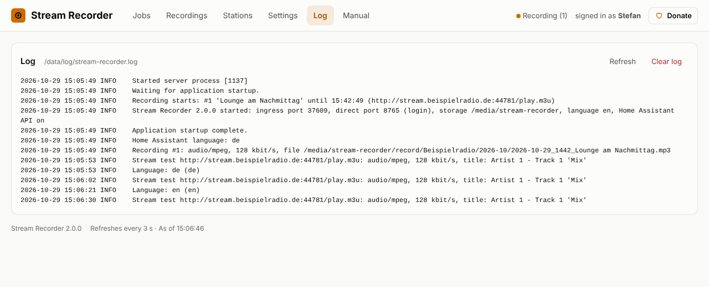
The Log menu shows the last 400 lines. Warnings are yellow, errors red. Clear log deletes the entries. The app deliberately writes only to its own log (file /data/log/stream-recorder.log in the app container), not to the Home Assistant log. Set the level of detail in the app configuration. At 5 MB a new file starts, three old ones are kept.
16. Troubleshooting
| Problem | Cause and solution |
|---|---|
| The sidebar shows an error | The app is not running. Start it under Settings › Apps › Stream Recorder and turn on “Start on boot” |
| Direct access: “not set up” | Username or password missing in the app configuration |
| Direct access: page does not load | No port entered under Network in the configuration |
| Stream test: HTTP 404 / 403 | Address wrong or outdated. Look up the current stream URL on the station's website |
| “The answer is a web page” | The URL leads to the player page. Use the direct stream or .m3u address |
| “HLS streams are not supported” | The station only offers HLS (.m3u8). Look for an MP3 or AAC address |
| Error “missed” | The app or Home Assistant was not running at the start time (restart, update, power cut) |
| “incomplete” with many interruptions | Internet or station unstable. The file contains everything that arrived |
| “Storage folder is not reachable” | Network share not mounted or wrong storage folder in the configuration |
| No track list in the file | The stream sends no title info (station test: “ICY: no”) |
| Scissors greyed out | No track list, not an MP3 or already a single track. The tooltip says why |
| Sensors missing in Home Assistant | The system info under Settings shows whether the connection works. After a HA restart wait up to 10 minutes |
| Storage running full | Move old files to the trash and empty it, or let it empty automatically |
17. Quick reference
| What | Where |
|---|---|
| Interface | Home Assistant sidebar, optionally http://<IP>:<port>/ |
| Configuration | Settings › Apps › Stream Recorder › Configuration |
| Recordings / single tracks / trash | /media/stream-recorder/record, …/title, …/deleted |
| Database, log | in the app's data folder (/data), included in the Home Assistant backup |
| Source code, report issues | github.com/BreitiDE/ha-stream-recorder |